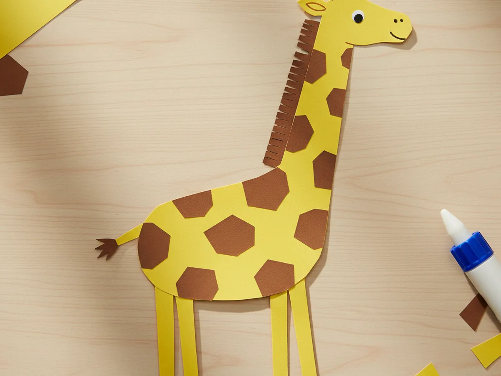
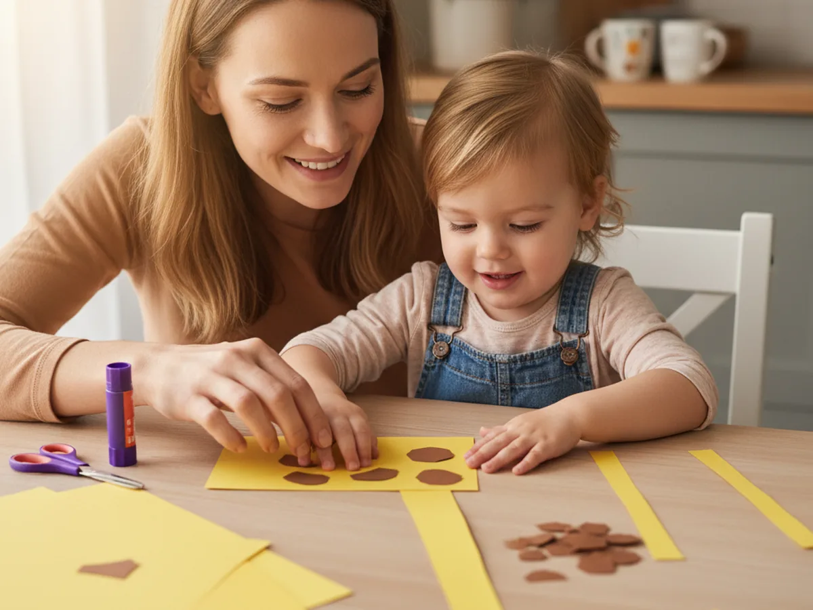
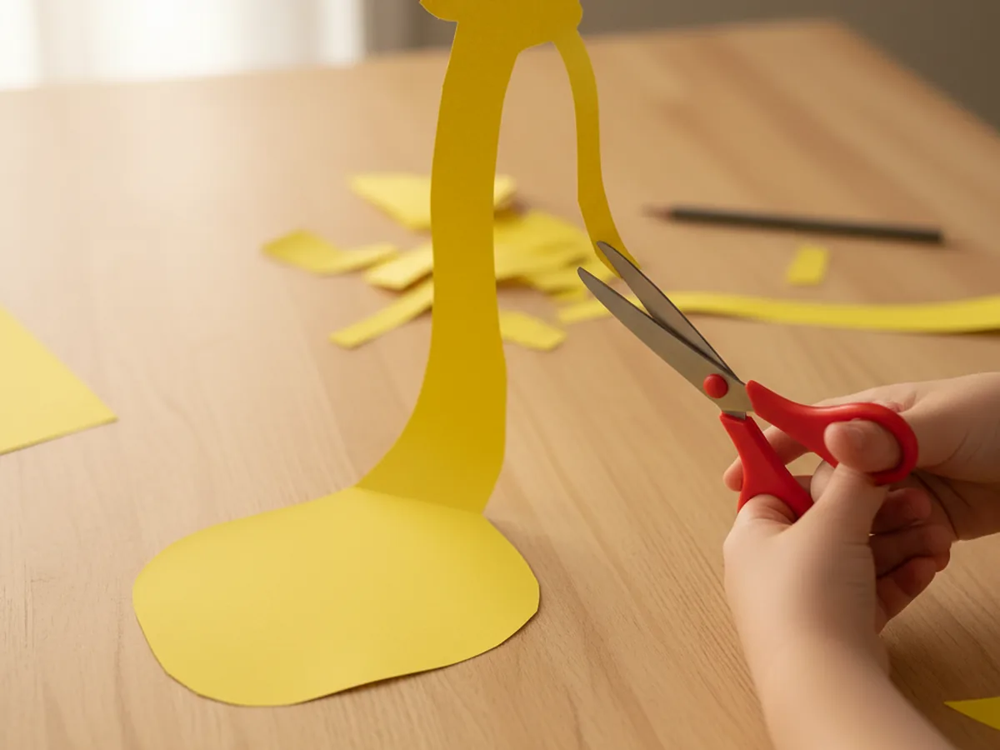
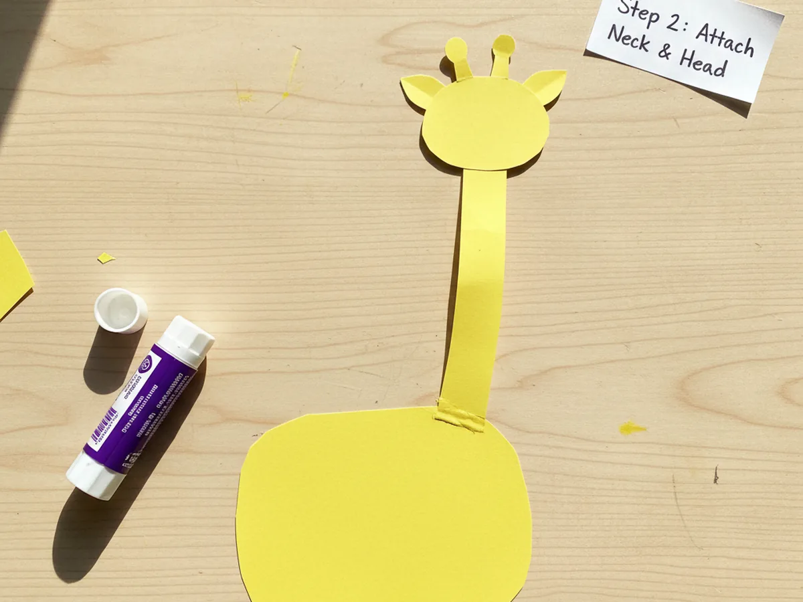
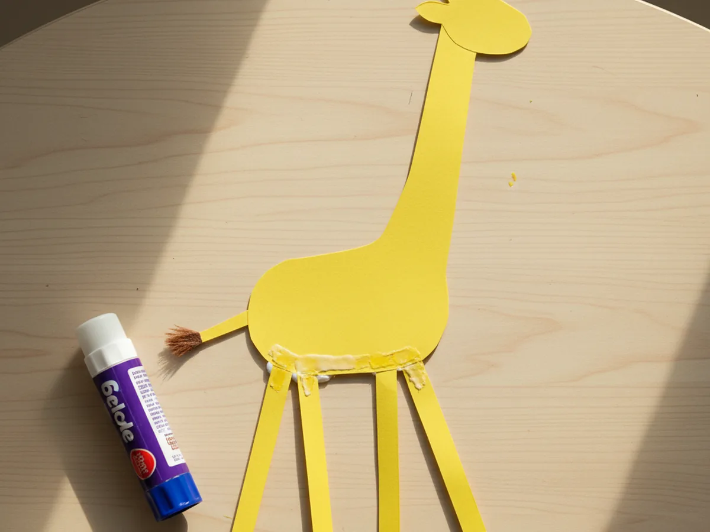
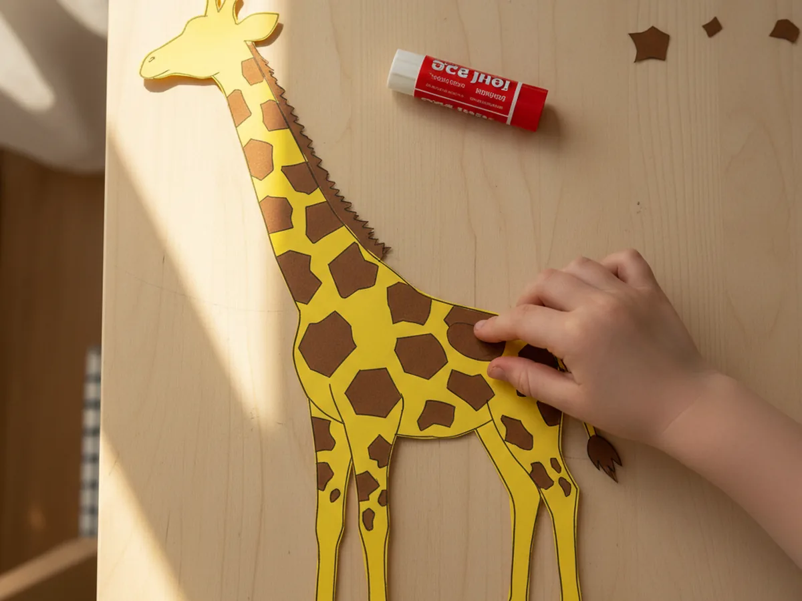
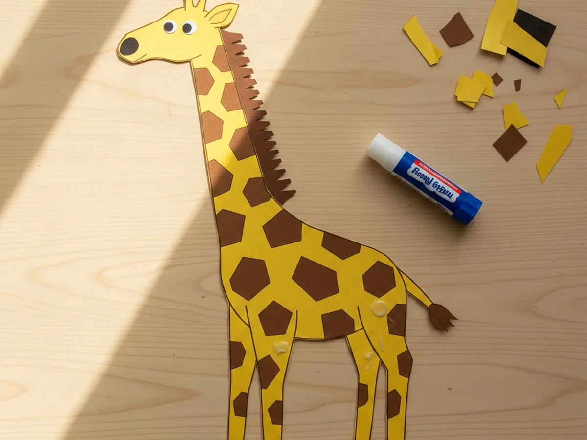
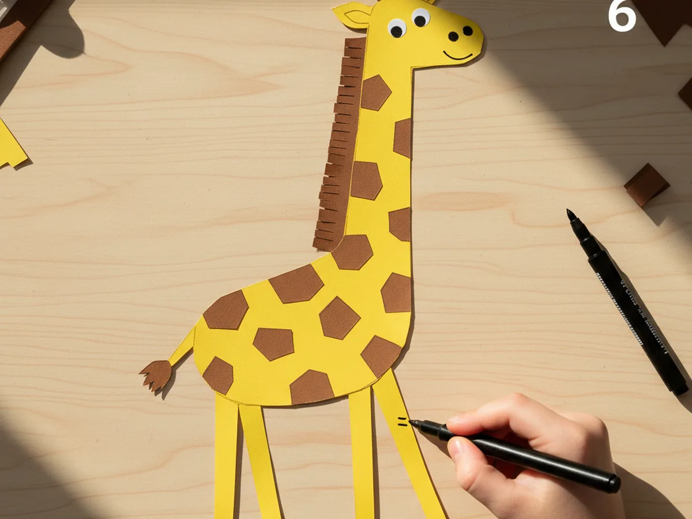

This sweet giraffe craft paper project is one of those tall, cheerful little builds that makes kids beam with pride the second they see the long neck go up. You cut a chunky yellow body, glue on a tall curved neck, add a tiny head with two stubby horns, four long legs, and a fringe-edged mane down the back. Then comes the best part: covering the whole thing in soft brown paper spots until your giraffe looks just like the ones at the zoo. 🦒
It is a calm, low-mess afternoon activity for ages 3 and up that fits right at the kitchen table with whatever scraps you have on hand. Younger kids can press the spots on while older kids handle the cutting. Either way, this giraffe paper craft turns out tall, charming, and a little wonky in the best way, just like a real baby giraffe finding its long legs for the first time.
Why Kids Love This Craft
Giraffes are one of those animals kids never get tired of. The long neck, the big eyelashes, the way they bend down so slowly to nibble on leaves: it all feels gentle and a little magical. When your child realizes they can build their own paper giraffe from a few simple shapes, they get that wide-eyed look of pure excitement. By the time the neck is glued on and standing tall, most kids are already naming it and deciding what kind of leaves it likes to eat.
This giraffe craft paper activity also gently builds skills without ever feeling like a lesson. Cutting the long neck and the four tall legs gives lovely scissor practice. Pressing on all those little brown spots is wonderful for fine motor coordination and patience. Adding the tiny eyes and nose is a precise hand-eye moment that feels like a small victory every time. None of it ever feels like work, because the giraffe slowly comes to life in your child's hands.
The decorating step is where every giraffe becomes one of a kind. Some kids cover the body in big bold spots. Some prefer tiny dots all over. Some draw little eyelashes on the eyes for a sweet, sleepy look. Others add a heart on the side or a tiny green leaf in the giraffe's mouth. There is no wrong way to make this easy giraffe paper craft, and that freedom is exactly what makes children so proud of their finished animal. By the time they hold it up, the giraffe has a name, a story, and usually a fresh spot on the fridge. 💛

What You'll Need
Here is everything you need to make this giraffe craft paper project at home. Most of these supplies are probably already in your craft drawer.
- Crayola Construction Paper, 240 ct, gives you yellow, brown, and black sheets all in one pack for every part of the giraffe
- Tru-Ray Yellow Construction Paper, 50 ct, a sturdier yellow option if you want a body that holds up to lots of play
- Astrobrights Cardstock, 65 lb Bright Assortment, even sturdier than regular paper for a giraffe that stands the test of time
- Elmer's Disappearing Purple Glue Sticks, 4 pack, easy for little hands and dries clear so no white shows on the spots
- Fiskars Blunt-Tip Kids Scissors, safe for ages 4 and up and just right for the long thin shapes
- UPINS Self-Adhesive Googly Eyes, 1000 ct, optional swap if your child prefers wiggly eyes instead of black paper circles
- Sharpie Fine Point Markers, Black, makes crisp little lines for the smile, nostrils, and tiny hoof details
- Crayola Broad Line Markers, for adding fun touches like long eyelashes, a leaf in the mouth, or extra colorful patterns
- A pencil, optional for sketching the body and neck before cutting
Step-by-Step Instructions
Take this one calm step at a time and your child will have their very own paper giraffe in about half an hour. Let them help with every part, even if they are just pressing the spots flat for you.
Step 1: Cut the Body and Long Neck
Start with a sheet of warm yellow construction paper. Cut a rounded rectangle for the body, about 5 inches wide and 3 inches tall, with soft rounded corners. Then cut a long curved neck strip about 5 inches tall and 1.5 inches wide, gently leaning to one side like a soft S shape. Apply glue to the bottom of the neck and press it onto the top-right corner of the body so the neck stands tall above it. This is the moment when the project starts to read clearly as a giraffe shape.

Step 2: Add the Head and Ossicones
From the same yellow paper, cut a small rounded head shape about 2 inches long. Think of a soft bean shape, slightly longer than it is tall. Glue the head to the very top of the neck so it points forward. Then cut two tiny stubby ossicones, the little horns giraffes have on top of their heads. Each one is just a small rounded oval about half an inch tall. Glue them onto the very top of the head, side by side, with little brown tips peeking up if you want extra detail.

Step 3: Add the Long Legs and Tail
Cut four long thin legs from the yellow paper, each about 3 inches tall and three-quarters of an inch wide. They should look more like skinny rectangles than chunky animal legs, since giraffes have such long graceful legs. Glue all four legs along the bottom edge of the body, with two near the front and two near the back. Then cut a short thin yellow tail strip and glue it onto the back edge of the body. Add a tiny brown tuft at the very tip of the tail for the classic giraffe look.

Step 4: Add the Brown Spots
This is the step kids love the most. Cut about ten to fifteen small irregular brown paper spots in different shapes and sizes. Some can be rounded, some can have little jagged edges, and none of them need to match. Real giraffe spots are wonderfully uneven, so anything goes. Hand the spots and the glue stick to your child and let them place the spots all over the body, the neck, and even the legs, leaving little gaps of yellow showing between each one. This is what gives the giraffe paper craft its signature look.

Step 5: Add the Eyes, Nose, and Mane
Cut two small black paper circles for the eyes, each about the size of a pencil eraser. Glue them onto the head, slightly toward the top, with a little space between them. Cut a tiny black oval for the nose and glue it at the very front tip of the head. Then cut a thin brown strip about 5 inches long with a fringed top edge, like little brown spikes. Glue the strip along the back of the neck so the fringe sticks up like a proper giraffe mane. Suddenly your cute giraffe paper craft has a real personality.

Step 6: Decorate the Giraffe
Now for the playful part. Hand your child the markers and let them go to town. They might draw a soft little smile under the nose, two tiny nostrils, small inner ear lines, and four little hoof marks at the bottom of each leg. Some kids love adding long eyelashes for a sleepy look, or a tiny green leaf hanging out of the giraffe's mouth. Once the marker is dry, your giraffe craft paper friend is officially finished and ready to start its tall, gentle little life on your fridge or windowsill. ✨

Variations to Try
Mommy and Baby Giraffe: Make two giraffes side by side, one tall and one small, and glue them onto a single piece of green construction paper as a savanna scene. Add a paper acacia tree for them to nibble on. This sweet version turns the craft into a story about your own family bond, and kids absolutely adore the little baby giraffe leaning against its mom.
Toilet Paper Roll Giraffe: Wrap yellow construction paper around an empty toilet paper roll as the body, then glue on a long neck strip, head, legs, and brown spots. The 3D version turns the paper giraffe craft into a sturdy little figurine that stands on its own, perfect for slightly older kids who want a small toy to play with afterward.
Handprint Giraffe Twist: Trace your child's hand on yellow paper and cut it out. Use the fingers as the giraffe's neck and one tall leg, with the thumb as the head. Add brown spots and a tiny mane for a sweet keepsake of how small your little one's hand was right now.
Final Thoughts
A simple giraffe craft paper project is one of those activities that proves you do not need a single fancy supply to make something your child will treasure. A few sheets of construction paper, a glue stick, and 35 minutes together at the table is all it takes. The real win is the moment your little one holds up their finished giraffe, gives it a tiny voice, and decides it lives on the windowsill forever from now on. That is the kind of small, magical moment that stays with both of you. Happy crafting, mama.
More Crafts You'll Love
If your family enjoyed making this little giraffe, here are two more sweet animal crafts to try next.